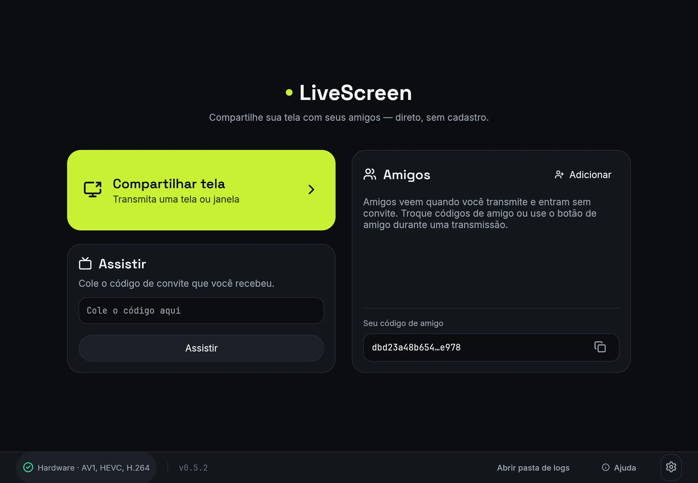
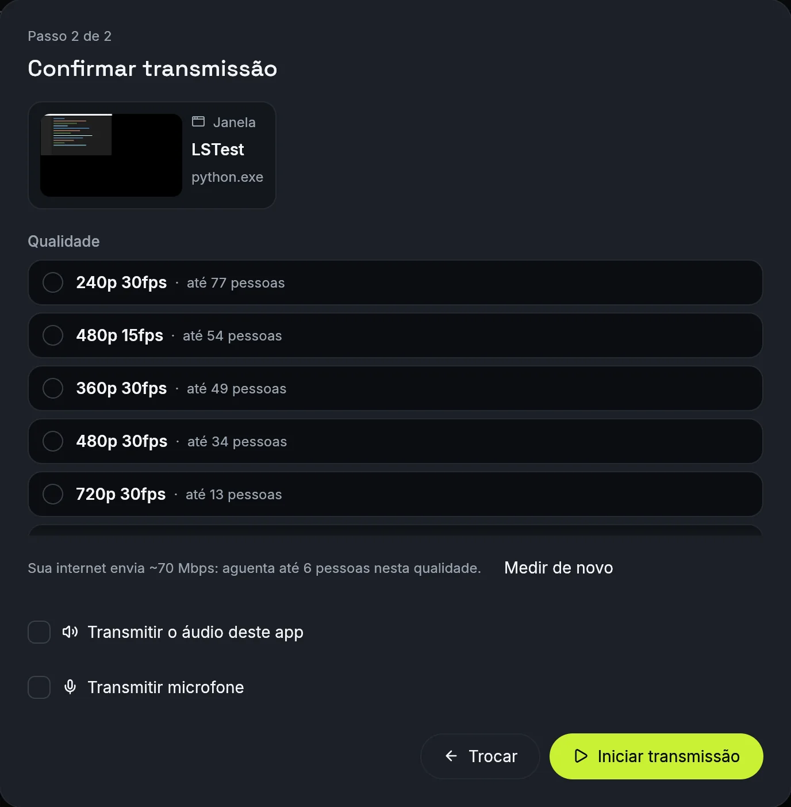
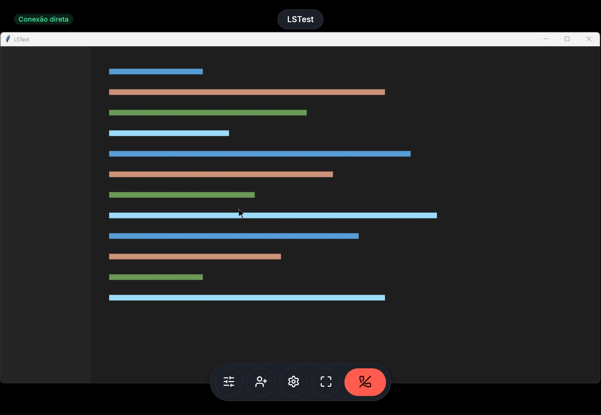

Compartilhe a tela do Windows com seus amigos.
Direto de um PC para o outro, sem cadastro e sem servidor de vídeo no meio. Quem assiste só precisa do LiveScreen e de um código de convite.
Windows 10 2004+ x64 · não precisa instalar · código aberto (MIT ou Apache-2.0) · todas as versões

Como usar
Para compartilhar
- Clique em Compartilhar tela.
- Clique na tela ou janela que quer mostrar.
- Confira a qualidade e o áudio no popup e clique em Iniciar transmissão.
- O código de convite já vai para a área de transferência: cole (Ctrl+V) no chat para quem vai assistir.
Para assistir
- Copie o código que recebeu.
- Cole no campo Assistir da tela inicial e clique em Assistir (ou Enter): conecta direto.
- Com o campo vazio, Assistir abre a tela de convite com o código da área de transferência já preenchido; clique em Conectar.
Amigos na lista entram sem convite: o botão Assistir aparece na linha do amigo só enquanto ele está transmitindo.
Durante a transmissão dá para trocar a qualidade, mudar o limite de pessoas da sala e remover alguém sem derrubar os outros. A janela do LiveScreen some da própria transmissão, então ela não aparece para quem assiste.


Como funciona
Cada pessoa que assiste recebe do seu PC a própria cópia do vídeo e do áudio. Quando a conexão direta não é possível, os pacotes passam por um servidor de retransmissão, que só repassa dados criptografados de ponta a ponta.
Quem limita a sala é o seu upload
| Qualidade | Upload por pessoa (máximo, com muito movimento) |
|---|---|
| 480p 30fps | 1,5 Mbps |
| 720p 30fps | 4 Mbps |
| 1080p 60fps | 8 Mbps |
Telas paradas (slides, código, navegador) gastam bem menos que isso.
Upload medido
ao abrir a escolha de tela, o app mede o seu upload (~5 s) e mostra quantas pessoas cada qualidade aguenta.
Qualidade recomendada
o app marca a mais pesada que o seu PC e a sua internet sustentam para o tamanho da sala, até 1080p 60fps.
Limite da sala
começa em 4 pessoas e pode ser aumentado durante a transmissão. Se o limite passar do que a internet aguenta, aparece um aviso. Quem tenta entrar com a sala cheia recebe "Recusado: sala cheia".
PC sobrecarregado
se o computador não der conta da qualidade, o app avisa e, com "Baixar a qualidade sozinho" ligado (padrão), reduz uma faixa sozinho, no máximo a cada 10 s. Só reduz, e só por sobrecarga do PC; a rede continua só com o bitrate adaptativo.
Qualidade pedida por quem assiste e outros detalhes na ajuda
Novidades da 0.6.0
Chat na transmissão
Mensagens de texto entre quem transmite e quem assiste, no PC, no Android e no navegador. O host define o nome e o papel de cada um.
Assistir pelo navegador
"Copiar link do navegador" leva a quem assiste sem instalar nada. A página também aceita colar o link ou o código da transmissão.
Android transmite
Toque em Transmitir tela na Home do app e compartilhe a tela e o áudio do celular, sem PC.
Navegador mais seguro
A chave da sala fica só no fragmento do link e nunca chega ao servidor; quem confere a entrada é o host.
Qualidade que se ajusta
O controle de bitrate também considera quem assiste no navegador, e as listas de qualidade mostram as maiores primeiro.
Navegador resiliente
Se a sinalização cair, quem já assiste continua vendo a transmissão; o host reconecta sozinho.
Recursos
Captura
Tela inteira ou uma janela só, pelo Windows Graphics Capture, com Desktop Duplication de reserva. A janela do LiveScreen some da própria transmissão.
Vídeo
H.264, HEVC e AV1 pela placa de vídeo (NVIDIA, AMD ou Intel), negociados entre todos na sala, com H.264 por software de reserva.
Áudio
Opus com todo o som do PC ou só o da janela, e o microfone opcional, desligado por padrão.
Conexão
Direta entre os PCs via iroh e criptografada de ponta a ponta. Sem conexão direta, um servidor de retransmissão só repassa os pacotes.
Amigos
Amigos na lista veem quando você transmite e entram sem convite. Dá para remover alguém da sala sem derrubar os outros.
Atualização
O app avisa quando há versão nova, baixa e confere o arquivo pelo sha256 antes de trocar.
Chat
Chat de texto na transmissão, no host e em quem assiste (desktop, Android e navegador). Exige host e viewer 0.6 ou superior; com uma ponta mais antiga a transmissão funciona, só sem chat.
Navegador
"Copiar link do navegador" gera um link para assistir sem instalar nada, com estatísticas, chat, mudo, Picture-in-Picture e tela cheia.
No celular, assista e transmita
Cole o código de convite e toque em Assistir. O app Android conecta a hosts 0.5 e 0.6 e também a hosts 0.4. Também transmite a tela: toque em Transmitir tela na Home e aceite o pedido de captura.
Com o app em segundo plano o áudio pausa e, em hosts 0.5 ou mais novos, o host para de enviar vídeo; tudo volta ao reabrir, sem reconectar.
Android 8.0 ou superior. A transmissão é da tela inteira, com vídeo H.264. O áudio do sistema exige Android 10 ou superior; o microfone não é transmitido.
Conexões que o app faz
Sem conta e sem servidor de vídeo: estas são todas as conexões que o app abre.
| Destino | Quando | Para quê |
|---|---|---|
| Servidores públicos da n0 (equipe do iroh) | ao transmitir, ao assistir e com o app aberto fora de uma transmissão quando há amigos na lista | Encontrar o outro PC e retransmitir quando não há conexão direta, e ver quais amigos estão transmitindo (uma conexão curta por amigo a cada 15 s). Os servidores repassam pacotes criptografados e não veem o vídeo. É infraestrutura pública compartilhada, para testes e com limite de taxa: não há garantia de banda quando o vídeo passa por ela. |
api.github.com / github.com |
ao abrir o app; ao clicar em Atualizar (desktop e Android) | Verificar e baixar versões novas |
speed.cloudflare.com |
ao abrir a escolha de tela, uma vez por execução, e ao clicar em "Medir de novo" | Medir o upload. O teste dura ~5 s e envia dados de teste: cerca de 60 MB numa fibra de 100 Mbps, com teto de 150 MB. |
livescreen.pendiego.com (Cloudflare Worker) e stun.cloudflare.com |
ao clicar em "Copiar link do navegador" durante uma transmissão | Sinalização do espectador no navegador (só o offer/answer WebRTC, sem vídeo) e descoberta do endereço público por STUN. O vídeo vai direto do PC para o navegador (WebRTC); o TURN da Cloudflare só entra se o operador do Worker o configurar. |
Pronto para transmitir?
Baixe, abra e mande o convite. Não precisa instalar nem criar conta.